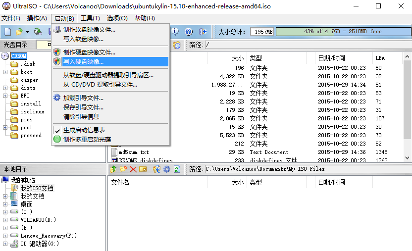
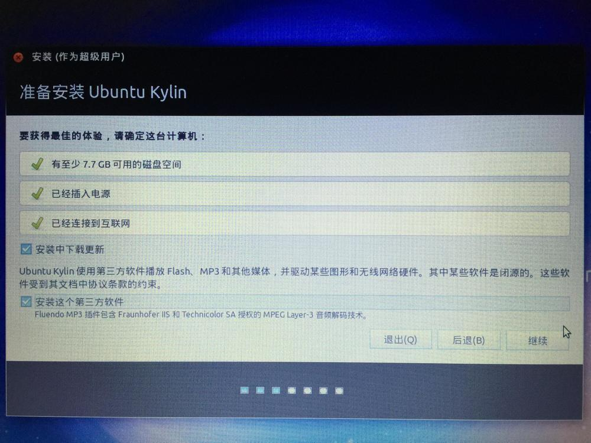
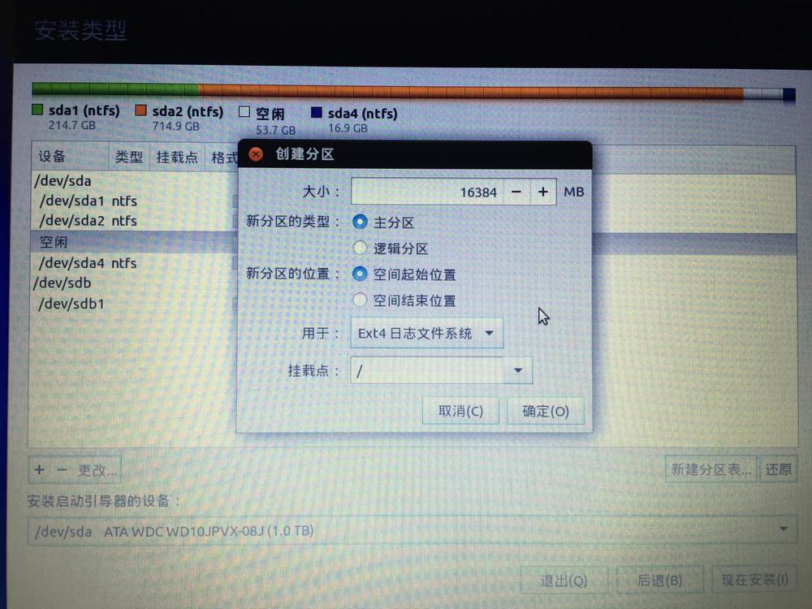
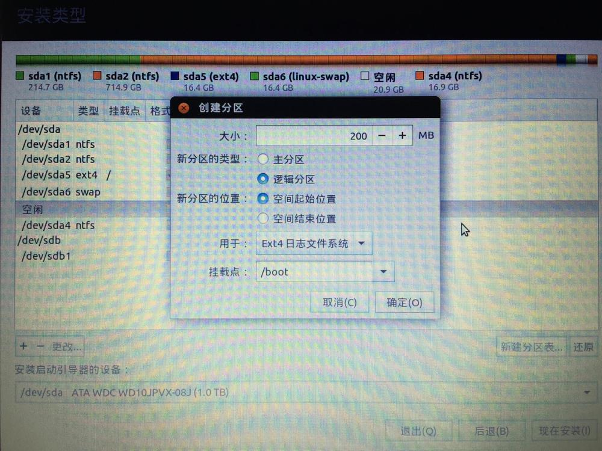
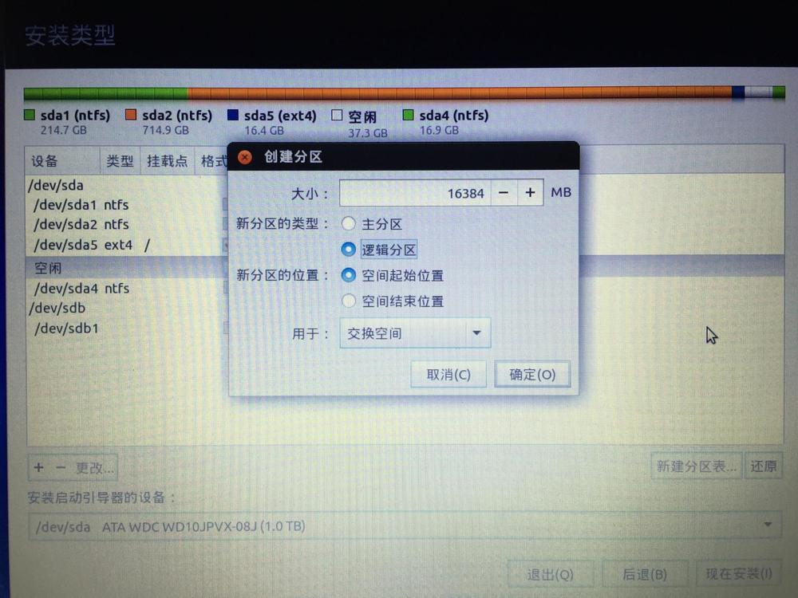
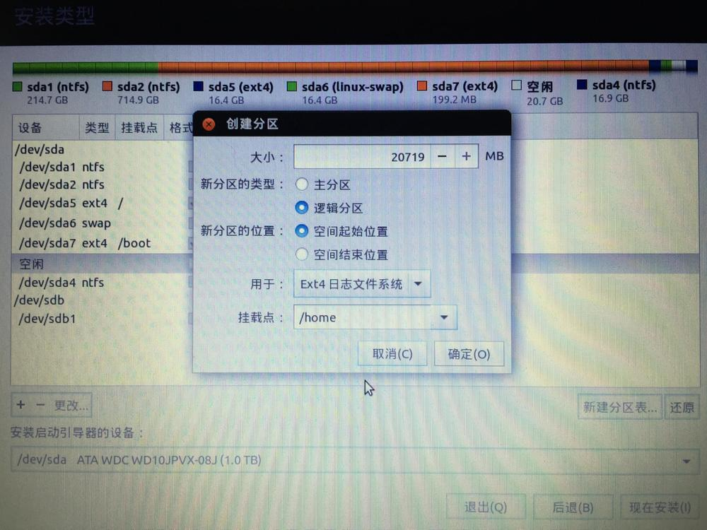
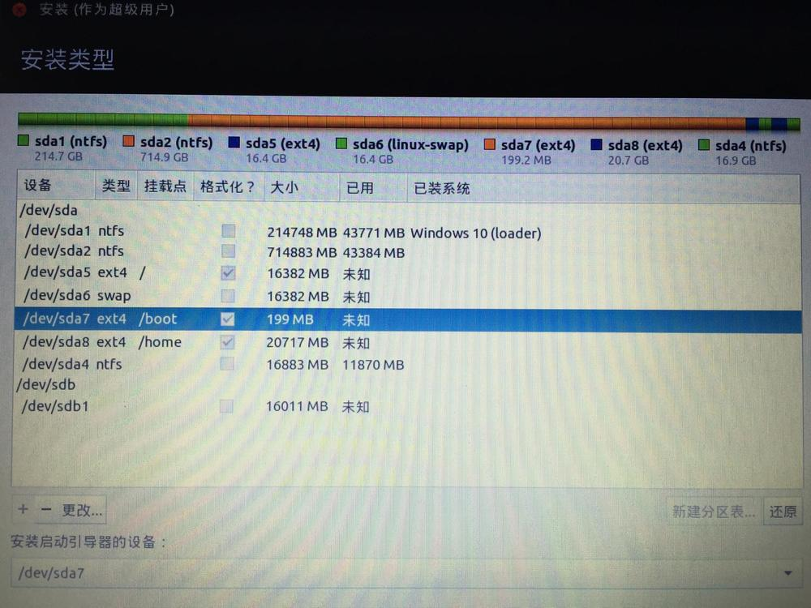

安装双系统windows+ubuntu
1.下载镜像
首先需要去ubuntu官网下载镜像文件
2.制作U盘镜像
利用ultraiso将ubuntu镜像写入空U盘中

这里区分一下ultraiso和win32diskimager的区别
ultraiso主要是写以iso为后缀的镜像
fwin32diskimager主要是写以img为后缀的镜像，例如树莓派镜像
3.空出硬盘分区
可以使用windows自带磁盘管理工具或者diskgenius对打算安装ubuntu的硬盘区域进行空闲处理。
4.重启进入bios
重启进入bios，选择从U盘启动。不同型号笔记本进入的方式不一样，华硕是按F2,联想是按F12也有可能是用针捅某个洞。。。
bios和uefi是两种不同启动引导方式，具体区别我很难讲清楚，如果是bios启动，在成功装完双系统后，可以通过easybcd修改默认启动顺序，但是uefi修改不了。
5.安装ubuntu系统
需要注意两点
- 如果没有联网，不要选择安装第三方软件
- 磁盘分区问题
在第三步的空闲磁盘上，分别分出/,/boot,swap和/home四个分区
根分区可能需要安装一些大型软件，建议三四十个GB吧

boot分区大概200MB或300MB

交换分区的大小为主存的两倍（未考证为什么？）

home分区主要存储平时用到的文件，如文档、视频等

最关键的是安装启动引导器的设备要和/boot所在分区一样

以上，完事，其它步骤都是一些基础配置。文中一些图片来自网络。